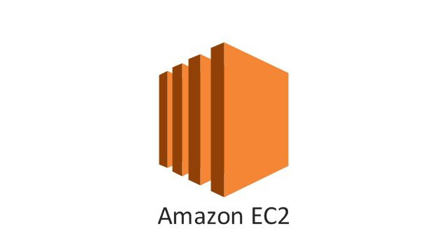
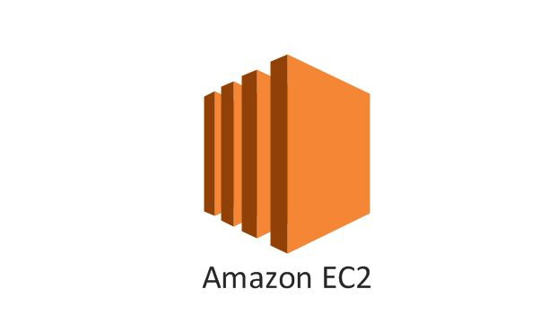
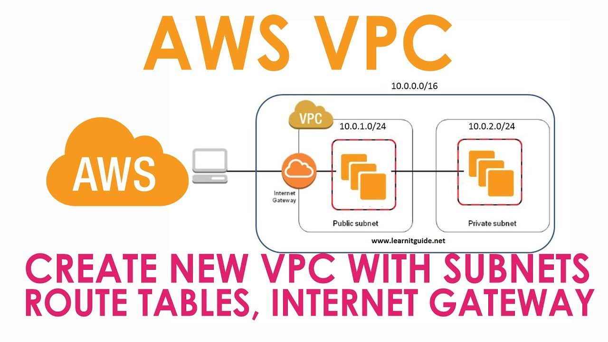

üëãHii folks
Yeah this blog will introduce you to Essential AWS services i've made my best attempt to make you understand things.
AWS contains ocean of oppurtunities
In 2020, Amazon Web Services comprised more than 212 services including computing, storage, networking, database, analytics, application services, deployment, management, mobile, developer tools, and tools for the Internet of Things..
Note-I have explained few Essential services in a manner such that an individual with no knowledge on AWS services can easily understand them.
 

I'll simply describe you about EC2 instance which means EC2server.EC2 name is given because of its elasticity that is elastic cloud computing, you can launch any application on your EC2 server by choosing operating system that is best suited to your application.
steps for your ec2 instance creation are as follows:-
Choose AMI2➡️Choose Instance Type➡️Configure Instance➡️Add Storage➡️Add Tags➡️Configure Security Group➡️Review
You can do a lot many things on your server üòÑ
Interesting fact on server's
About 70% of the world’s internet traffic travels through Loudon County, Virginia. It’s earned the nickname “Data Center Alley” and is home to more than 60 different server farms covering more than 10 million square feet of space — currently, projects are in place to add another 3.5 million square feet.
All the income from the business and its employees generates about 7.2% if the county’s entire revenue.

Don't Panic you may be quite suprised by these terminology in this picture but it is not rocket science üòÇ
I'll cut these into small snippets and explain one by one vpc-It enables you to build a virtual network on your cloud and You can specify an IP address range for it.
Subnet-Name itself says that it is a subdivision of an IPnetwork logically it is further divided into public network(has direct access to internet gateway) and private network(it can also have access to internet gateway through public subnet indirectly).
Internet Gateway-It is a basic VPC component that allows communication between your VPC and the internet.It supports IPv4 and IPv6 traffic.It doesn't cause any availability risks or bandwidth constraints on your network traffic.
Interesting Fact
if you are a student(or)employer(or)entrepreneur to taste aws flavour you can have hands on experience on aws services without actually creating an aws account through AWS educate starter account.
It is a very simple storage service,Even i've stored and hosted this website files using s3 . For free tier it gives 5GB storage space.As simple as water stored in buckets our objects can be stored in buckets you can create up to 100 buckets in each of your AWS accounts. If you need additional buckets, you can increase your account bucket limit to a maximum of 1,000 buckets by submitting a service limit increase,But fact is that the number of objects you can store is unlimited.If you want your objects to be visible you need to make them as public and this step is not compulsory it depends on the use case
Interesting Fact
Durability is designed for 99.999999999% for any file over a year on S3. Practically, this means that every 10,000 years, on average, you should only lose one file. This has never happened in the history of S3. You can say with almost certainty that the files will be there forever.

You may be familiar with relational database it is the data stored in tables organised into rows and columns.It makes it easy to set up, operate, and scale a relational database in the cloud . Amazon RDS is available on several database instance types - optimized for memory, performance or I/O - and provides you with six familiar database engines to choose from, including Amazon Aurora, PostgreSQL, MySQL, MariaDB, Oracle Database, and SQL Server. You can use the AWS Database Migration Service to easily migrate or replicate your existing databases to Amazon RDS.
Important Fact
Amazon RDS provides 750 hours in the free tier for Single-AZ db. t2. micro Instance usage to running MySQL, MariaDB, PostgreSQL, Oracle and SQL Server (running SQL Server Express Edition)
DynamoDB is non-relational database,A replica table (or replica, for short) is a single DynamoDB table that functions as a part of a global table. Each replica stores the same set of data items. Any given global table can only have one replica table per AWS Region. Its flexible data model and reliable performance make it a great fit for mobile, web, gaming, Internet of Things (IoT), and many other applications.You can monitor Amazon DynamoDB using CloudWatch
Cloud Watch-It is is a monitoring and management service that provides data and actionable insights for AWS, hybrid, and on-premises applications and infrastructure resources.
replicas-an exact copy or model of something.On the other hand Aurora replicates data to six storage nodes in Multi-AZs to withstand the loss of an entire AZ (Availability Zone) or two storage nodes.
Availability Zone-It is one or more discrete data centers with redundant power, networking, and connectivity in an AWS Region(physical location around the world).
storage nodes-is a machine(remote device) that is connected to a Backup server and one or more devices used in Backup's backup, archive, and HSM(Hardware Security Module)operations.
NOTE-Hence there is no apple to apple comparison of DynamDB with Aurora which is a relational database i haven't found images related to both to find the image of how DynamoDB will look observe next content
Interesting Fact
Amazon RDS uses SSDs in all its database services to achieve better IO throughput. Amazon Aurora provides five times the throughput of standard MySQL or twice the throughput of standard PostgreSQL running on the same hardware

API gateway is an API management tool that sits between a client and a collection of backend services. An API gateway acts as a reverse proxy to accept all application programming interface (API) calls, aggregate the various services required to fulfill them, and return the appropriate result.Support for stateful (WebSocket) and stateless (HTTP and REST) APIs.Powerful, flexible authentication mechanisms, such as AWS Identity and Access Management policies(IAM), Lambda authorizer functions, and Amazon Cognito user pools.
AWS IAM-Permissions let you specify access to AWS resources. Permissions are granted to IAM entities (users, groups, and roles) and by default these entities start with no permissions.
Amazon Cognito-It lets you add user sign-up, sign-in, and access control to your web and mobile apps quickly and easily. Amazon Cognito scales to millions of users and supports sign-in with social identity providers, such as Facebook, Google, and Amazon, and enterprise identity providers via SAML 2.0.
AWS Lambda lets you run code without provisioning or managing servers. You pay only for the compute time you consume.
AWS LAMBDA- With Lambda, you can run code for virtually any type of application or backend service - all with zero administration. Just upload your code and Lambda takes care of everything required to run and scale your code with high availability. You can set up your code to automatically trigger from other AWS services or call it directly from any web or mobile app.
Interesting Example
A great example of an API Gateway is the Netflix API Gateway. The Netflix streaming service is available on hundreds of different kinds of devices including televisions, set‑top boxes, smartphones, gaming systems, tablets, etc. Initially, Netflix attempted to provide a one‑size‑fits‑all API for their streaming service.